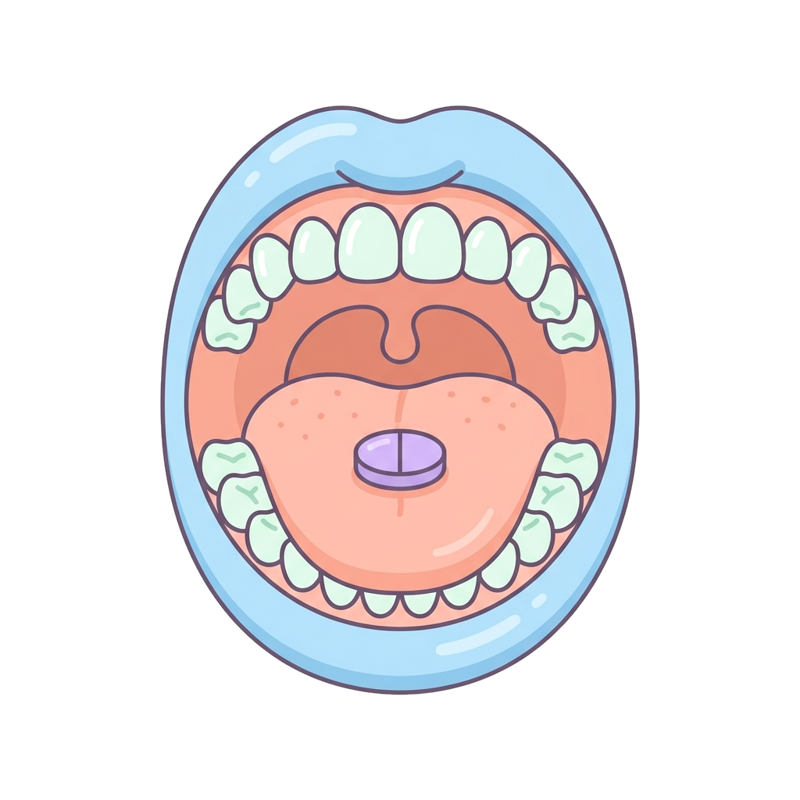
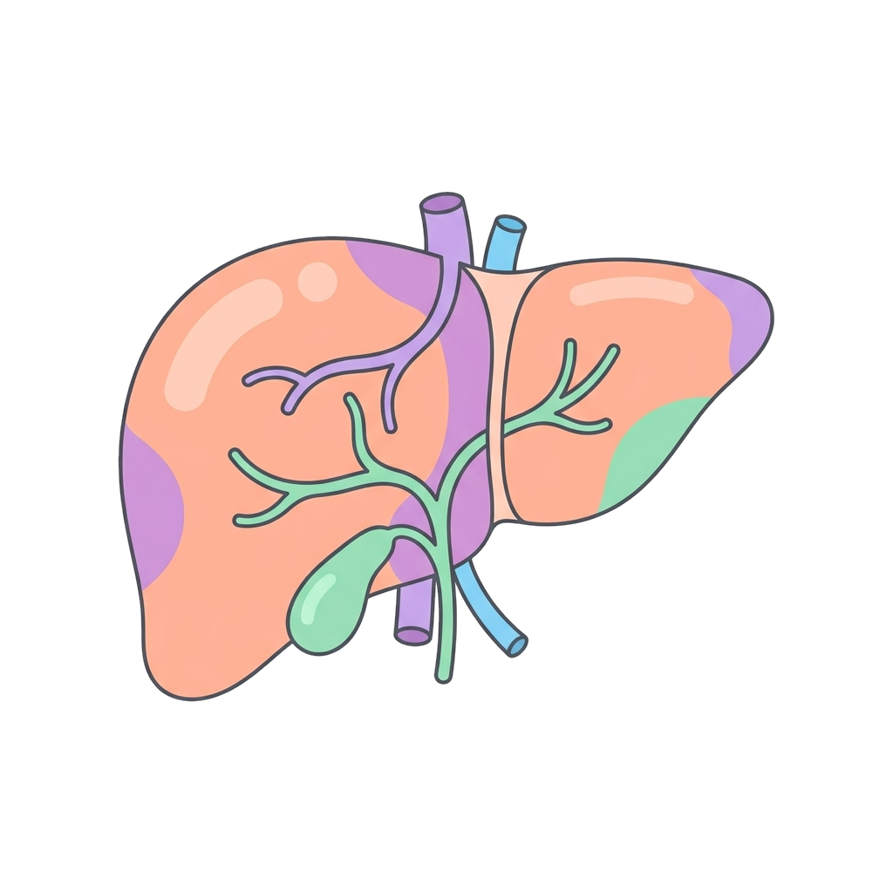
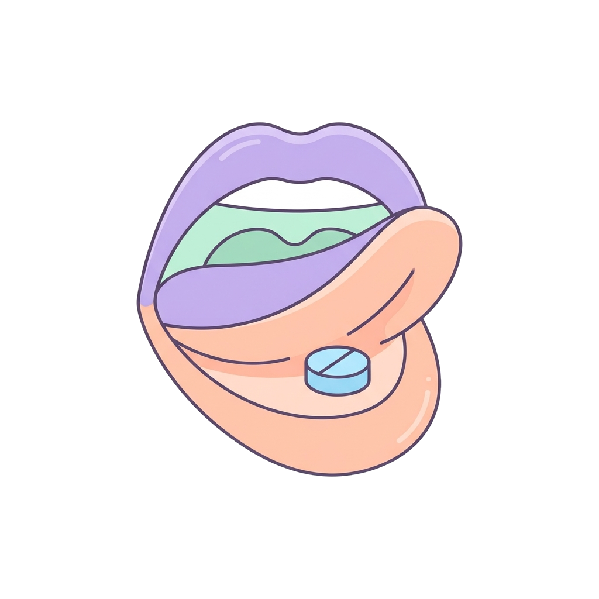
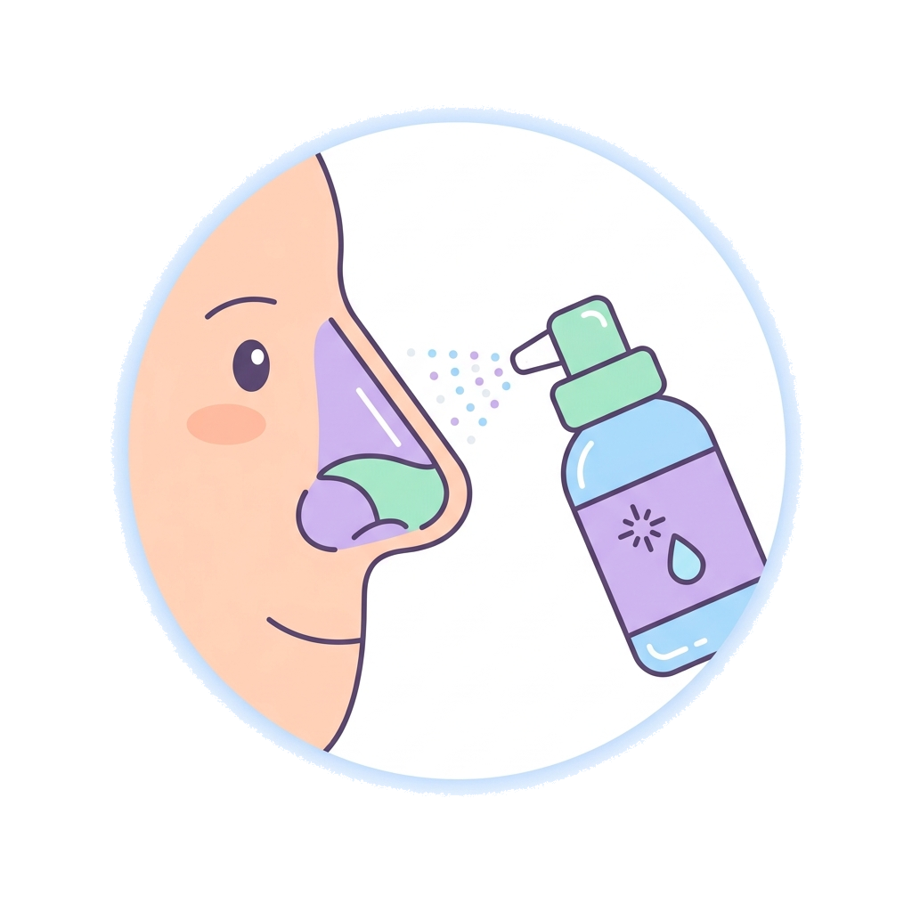
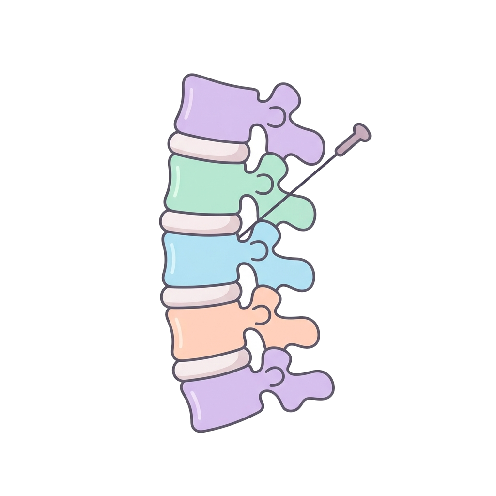

5 · Vie di somministrazione
Vie di somministrazione
Sono i metodi di introduzione dei farmaci nel corpo. La scelta dipende dalla natura del farmaco (solubilità, pH), dalle condizioni del paziente (coscienza, vomito) e dall'urgenza dell'effetto.
Via orale (VO)→ Stomaco→→
Stomaco→→ Sangue
Sangue

Bocca
FegatoIngestione per via orale con assorbimento nel tratto gastrointestinale. È considerata la via più sicura ed economica.
- Farmacocinetica: subisce l'effetto di primo passaggio (metabolismo epatico), che può ridurre significativamente la quantità di farmaco che raggiunge il sangue, cioè la biodisponibilità.
- Limiti: richiede un paziente cosciente e collaborante; vomito, cibo e pH gastrico possono modificare l'assorbimento.
Le vie che vedremo
Orale

SublingualeRettale

IntranasaleOculare e otica

EpiduraleDa ricordare
Più una via evita il fegato, più il farmaco arriva «intatto» al sangue: è il motivo per cui la via orale è comoda ma non sempre la più efficiente.
14